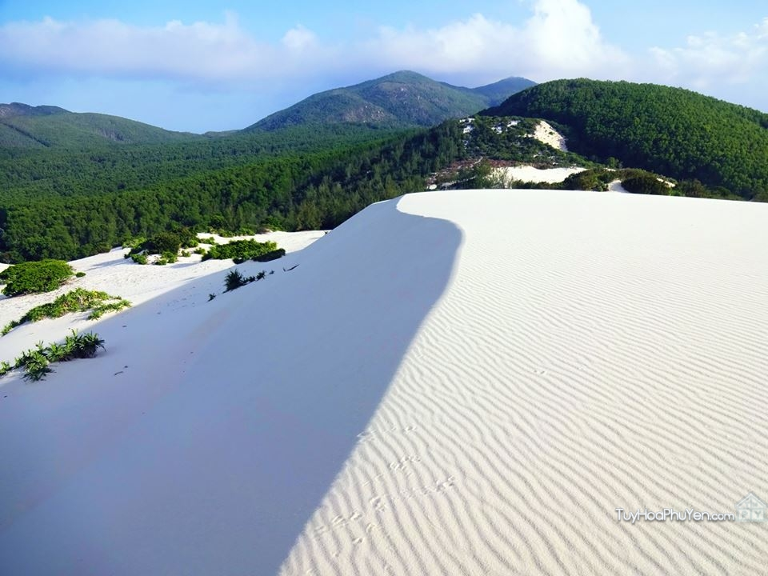
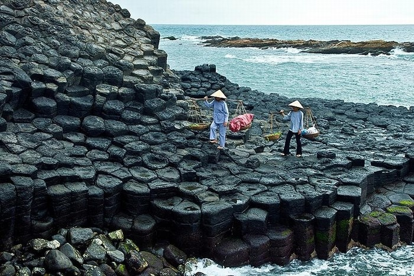

Du lịch Phú YênHấp dẫn và thân thiện! |
 |
Động Cát Từ Nham - Núi Phú Sĩ Việt Nam Sông Cầu - Phú Yên |
|
Nhất Tự Sơn - Con đường đi bộ ra đảo Vịnh Xuân Đài - Sông Cầu - Phú Yên |
Cùng với Ireland, Tây Ban Nha và Scotland, gành đá dĩa tại Phú Yên – Việt Nam được xem là một trong những hiện tượng thiên nhiên kỳ thú nhất. Tạo hóa đã dày công xếp đặt những phiến đá hình lục giác cứ thế chồng lên nhau thành từng khối dĩa lớn, bồng bềnh giữa làn sương mờ của mây trời và nước biển như một kỳ quan hiếm có. Gành đá dĩa Phú Yên, danh thắng độc đáo duyên hải miền Trung càng làm tăng vẻ đẹp hoang sơ đầy quyến rũ của vùng đất đầy nắng và gió, để trái tim du khách không khỏi trầm trồ thán phục khi được một lần ghé thăm. "của bạn Tân Nhật chia sẻ, mời các bạn tham khảo nhé"
"Phú Yên có nhiều địa điểm đẹp nổi tiếng nhưng đối với mình, đặc biệt nhất đó chính là Nhất Tự Sơn (47 km) và bãi Rạng, bãi Ôm (60km)."

Gành Đá Dĩa (hay còn được người dân gọi là Gành đá đĩa) nằm tại xã An Đông, huyện Tuy An, tỉnh Phú Yên như một con ong khổng lồ ngày đêm chuyện trò cùng sóng biển mênh mang cách thành phố Tuy Hòa chừng 40km.
Để di chuyển từ thành phố, du khách có thể đi theo con đường quốc lộ 1A về hướng Bắc khoảng 30 km qua thị trấn Chí Thanh rồi tiếp tục rẽ phải để đến Gành đá dĩa cách đó 12km theo hướng biển Đông.
Nếu thích trải nghiệm hương gió từ biển và ngắm nhìn quang cảnh yên bình nơi mảnh đất miền Trung qua từng con sóng, du khách có thể chạy dọc theo con đường biển Tuy Hòa chừng 35km để đến thăm thú Gành đá dĩa.
TIN NỔI BẬT
Phương tiện để di chuyển đến Phú Yên cũng rất thuận lợi cho du khách khắp cả nước từ máy bay, đường sắt đến đường bộ. Tùy vào địa điểm đang cư ngụ mà du khách có thể lựa chọn cho mình phương cách đơn giản và thuận tiện nhất để ghé thăm Gành đá dĩa Phú Yên.

Gành đá dĩa Phú Yên được tạo ra bởi sự phun trào của dòng dung nham cực nóng bị co lại khi gặp nhiệt lạnh của nước biển đã hình thành nên những phiến đá kỳ thú đặc sắc nhất như hiện nay. Được vỗ về quanh năm bởi làn nước trong xanh của biển, hơi sương của mây trời, Gành đá dĩa sừng sững như tượng đài bất di bất dịch đánh gục trí tòa mò của bất kỳ vị du khách khó tính nào.
Đến Gành đá dĩa mùa nào cũng đẹp, từ quang cảnh lúc bình minh lên đến khi hoàng hôn buông cùng ánh đèn vàng leo lét cũng đều mang lại vẻ đẹp ma mị và nên thơ cho du khách thưởng thức, tuy vậy du khách nên tránh đến đây vào mùa mưa bão từ tháng 8 đến tháng 11.
Vào đầu tháng 2 và mùng 10 tháng 8 âm lịch hàng năm, ngư dân Tuy An nói riêng và Phú Yên nói chung sẽ tổ chức lễ cầu ngư để bắt đầu và kết thúc vụ cá, du khách đến với Gành đá dĩa vào thời điểm này không những chiêm ngưỡng được danh thắng kỳ quan mà còn trải nghiệm được không khí sôi động của lễ hội quan trọng bậc nhất trên dải đất biển thân thương.
Không phải là điểm nóng về du lịch như Nha Trang, Đà Nẵng hay Đà Lạt, Vũng Tàu, các khách sạn ở đây có giá tương đối bình dân so với nhu cầu sử dụng chung của du khách khi đi du lịch. Để thuận tiện cho kế hoạch di chuyển nhiều nơi, du khách có thể đặt phòng tại nhà nghỉ, khách sạn tại trung tâm thành phố Tuy Hòa từ khách sạn nổi tiếng như: Cendeluxe Tuy Hòa (số 2 đường Hải Dương), Kaya 4 sao (số 238 đại lộ Hùng Vương),… đến hạng trung: An Phát (số 35 Lê Lợi), Nhiệt Đới (số 216 đường Nguyễn Huệ),…
Nếu là người yêu thích thiên nhiên hoang dã, muốn chìm đắm hoàn toàn vào thế giới của tự nhiên thì du khách có thể lựa chọn hình thức ngủ ngoài lều ngay tại bãi Bàng gần Gành đá dĩa để có một đêm tuyệt vời.
Từ trên cao, Gành đá dĩa hiện ra như một chú ong khổng lồ đang tịnh tâm yên vị làm người bạn tri kỉ của biển. Khi đến gần hơn, từng phiến đá lục giác lô ra như bậc thang đưa lối du khách bước qua nhiều con đường để ngắm nhìn thật rõ từng khoảnh khắc tuyệt diệu của tạo hóa. Đi sâu xuống dưới gành một chút, du khách sẽ bắt gặp một hang động sâu thẳm với từng đợt sóng vỗ vào đá tung bọt trắng xóa, thanh âm tựa tiếng đàn thổn thức bản tình ca của biển âm thầm theo năm tháng không bao giờ nguôi.

Xa xa là bãi Bàng, nơi những hòn đá rộng lớn nằm yên bình dưới tán cây bàng xòe rộng. Đây là địa điểm lý tưởng để du khách cắm trại, nghỉ ngơi, từ từ thả mình vào không gian xanh hoang sơ thanh tịnh của làng biển miền Trung.
Cách đó không xa là hải đăng Gành đèn, tuy không rực rỡ kiêu kỳ với kiến trúc nổi bật như hải đăng Đại Lãnh, song nơi đây có vị trí khá đẹp khi có thể ngắm nhìn toàn bộ cảnh quan của vùng đất biển, nghe từng cơn gió nhẹ ùa vào thư thái tâm hồn.
Trên đường quốc lộ 1A quay trở lại thành phố, du khách còn có cơ hội ghé thăm nhà thờ cổ nhất Việt Nam – Nhà thờ Mằng Lăng, được xây dựng cách đây 120 năm. Với kiến trúc Gothic trong khuôn viên rộng lớn 5000 m2, đây là một trong những công trình Công giáo nổi bật nhất cả nước.

Gành đá dĩa chưa được xây dựng thành khu du lịch để khai thác nên vẫn còn nhiều nét hoang sơ, cũng vì thế mà các dịch vụ ăn uống nghỉ ngơi hầu như không có nhiều. Du khách có thể mang theo ít đồ ăn nhẹ để lấy lại sức lực ngay tại Gành đá dĩa. Sau đó, di chuyển sang khu vực bãi Bàng để thưởng thức món quà hải sản của biển tươi ngon với giá cả khá phải chăng như: sò huyết Ô Loan, cá ngừ đại dương, ghẹ đầm Cù Mông, gỏi sứa, bún mực,…
Cuối cùng sẽ là một số món đặc trưng tại Phú Yên ngay thành phố Tuy Hòa: bánh tráng Hòa Đa, chả dông, lẩu đèn pha Tuy Hòa.
Đến với Gành đá dĩa, du khách không chỉ lạc vào thế giới tuyệt mỹ của thiên nhiên, mà còn cả một không gian đặc sản vô cùng phong phú và đa dạng để làm quà cho gia đình và người thân. Từ những chiếc vỏ ốc, vỏ sò, san hô đơn giản qua bàn tay tinh xảo đã biến thành chiếc móc khóa, chuông gió đẹp mắt. Hay từ vỏ dừa đơn xơ bình dị đã trở thành tác phẩm nghệ thuật tranh khảm tinh tế mang đậm nét đẹp của Phú Yên.
Bên cạnh đó, không thể bỏ qua các món ngon được làm khô có thể mang đi bất cứ đâu để bè bạn cùng thưởng thức như: bò khô, nai khô, khô cá ngừ, bánh tránh Hòa Đa, nem chua Phú Yên, hạt đười ươi.
Cùng với Bình Định, Phú Yên góp phần làm nên văn hóa xứ nẫu đậm tình chân quê mà ai đã một lần ghé thăm đều nhớ mãi không thôi.
Thương chi cho uổng công tình
Nẫu dìa xứ nẫu, bỏ mình bơ vơ.
Nằm ở giữa đất nước cong cong hình chữ S, xứ nẫu Phú Yên là nơi giao thoa nhiều vùng văn hóa khác nhau để tạo nên nét hài hòa đặc sắc riêng. Con người xứ nẫu chân chất thật thà trong từng câu nói, e dè với người lạ nhưng tấm lòng thiệt tình mến khách. Cùng với nhiều danh lam thắng cảnh, vẻ đẹp chân phương người dân xứ nẫu đã hòa quyện vào nhau hấp dẫn du khách phương xa tìm đến và mang về một hình ảnh, một nỗi nhớ khắc khoải khôn nguôi.
Khi đi du lịch biển ở bất kỳ nơi đâu, và Gành đá dĩa cũng không ngoại lệ, du khách cần chú ý mang theo các vật dụng cá nhân đầy đủ, nhất là kem chống nắng, nón rộng vành và thuốc đặc trị. Luôn luôn nhớ mặc áo phao nếu muốn tắm biển hoặc các trò chơi dưới nước để đề phòng bất trắc.
Tránh các mùa mưa bão từ tháng 8 đến tháng 11 âm lịch hàng năm, vì phương tiện di chuyển khó, đường dễ xảy ra trơn trượt nên du lịch sẽ không thuận tiện.
Mảnh đất Phú Yên miền Trung đầy nắng và gió đã được tạo hóa ưu ái ban tặng vô vàn danh thắng huyễn hoặc mê động lòng người. Và Gành đá dĩa là một kỳ quan như thế, với nét đẹp đơn sơ chẳng cần qua bàn tay tu sửa vẫn huy hoàng khoe mình làm thổn thức bao trái tim thâp phương tìm về để một lần được tận mắt chiêm ngưỡng, để đến khi bước chân rời đi vẫn nao nức một hình bóng trong lòng mãi không phai.
ĐỊA ĐIỂM ĂN UỐNG